La oss gjøre som Egypterne og bygge en pyramide!
Denne oppgaven har ikke så detaljerte instruksjoner som "Bygge en kube",
den passer fint som oppgave nr 2.
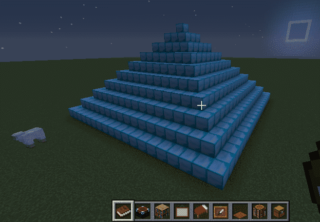
Steg 1: Lage en ny mod
Sjekkliste
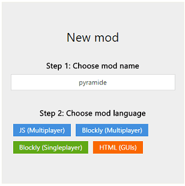
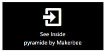
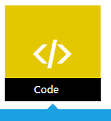
Steg 1: Lage main funksjonen
Sjekkliste
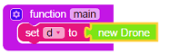
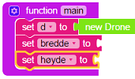
Sett bredde til et tall og høyde til bredde delt på 2:
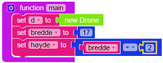
Logic > If-klossen > dra den inn i slutten på main funksjonen
Math > > koble den til if-klossen > forandre even til odd
Variables > bredde-klossen > dra den inn i det tomme hullet i if-klossen
Variables > > dra inni if-klossen (til høyre for do).
Math > > kobles til set høyde klossen
Variables > høyde klossen > dra inn i den første tomme hullet
Math > øverste klossen > dra inn i det siste tomme hullet > forandre tallet til 1
Da blir det sånn:
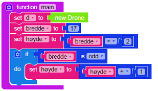
Steg 2: Bygge en pyramide
Sjekkliste
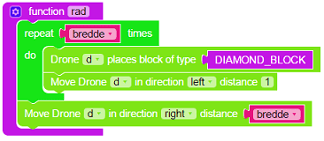
Functions > den øverste klossen > endre navnet til pyramide
Loops > Repeat 10 times klossen > dra inn i funksjonen
Loops > Repeat 10 times klossen > dra inn i den første repeat-løkken
Det skal se sånn ut:
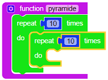
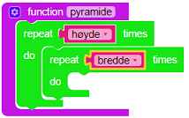
Den innerste løkken skal bygge en nivå og den ytterste løkken skal styre dronen oppover i høyden
og justere størrelsen på hvert nivå sånn at det blir en pyramide.
Functions > rad > dra den inn i den innerste løkken
Minecraft > Drone > Kloss nr. 2 fra toppen > dra den rett under
rad klossen (inni den innerste løkken) og forandre retningen til forward
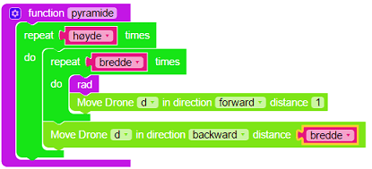
Math > change item klossen > dra under forrige kloss > pil
nedover og velge bredde variablen > forandre tallet til -2
Minecraft > Drone > Kloss nr. 2 fra toppen > dra under forrige kloss
Minecraft > Drone > Kloss nr. 2 fra toppen > dra under forrige
kloss > forandre retning til fremover
Minecraft > Drone > Kloss nr. 2 fra toppen > dra under forrige
kloss > forandre retning til venstre
Da blir pyramide funksjonen sånn:
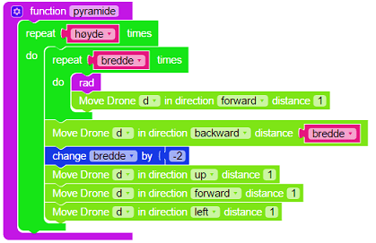
For at dronen skal starte å bygge over bakken så flytter du dronen opp en posisjon:
Minecraft > Drone > Kloss nr. 2 fra toppen > dra den inn på
slutten av main funksjonen
Tilslutt må du utføre pyramide funksjonen helt til slutt i main funksjonen
Functions > pyramide > dra den inn på slutten av main funksjonen
Da skal main funksjonen se sånn ut:
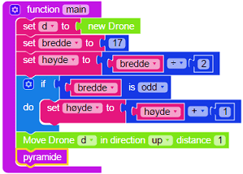
Test prosjektet
Nå kan du teste modden din i Minecraft! Trykk på den grønne Mod knappen
øverst og gå til Minecraft og kjør modden din!
Hvis den ikke fungerer så må du rette opp litt i modden, det er helt vanlig.
Modden din skal se omtrent slik ut:
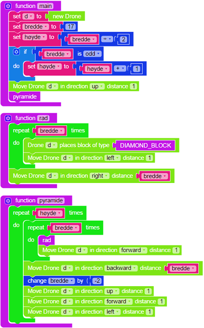
Gratulerer!
Utfordring: Pyramider av forskjellig størrelse
Hvis du kjører modden din flere ganger etter hverandre i Minecraft
så blir alltid pyramidene like store. Litt kjedelig!
Du kan enkelt endre modden så den bygger pyramider av forskjellig størrelse.
Under Math kategorien er det en kloss som heter Random integer from 1 to 100
som velger et tilfeldig tall mellom det første tallet og det siste tallet.
Når du bruker den så er det lurt å forandre tallene så bredden på pyramidene blir sånn passe, f.eks. fra 10 til 40.
Prøv å legg inn en if-test sånn at det alltid blir et oddetall i bredde variabelen.
Tips: du kan bruke is even betingelsen under Math kategorien og legge til 1 hvis tallet er et partall.
Test modden din flere ganger etter hverandre i Minecraft og sjekk at du får forskjellig størrelse på pyramidene.
Forbedre denne siden
Funnet en feil? Kunne noe vært bedre? Hvis ja, vennligst gi oss tilbakemelding ved å lage en sak på Github eller fiks feilen selv om du kan. Vi er takknemlige for enhver tilbakemelding!